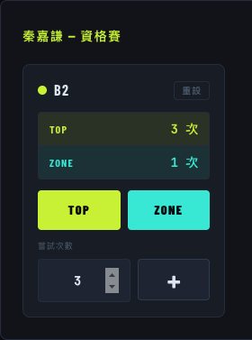

為攀岩賽事設計的線上即時計分平台，符合 IFSC 規則
boulder-scoring-system-production.up.railway.app專為台灣攀岩賽事開發，免安裝、即開即用，從裁判計分到成績公告一站完成。
裁判只需開啟瀏覽器即可計分，手機、平板、筆電全部支援，無需下載 App。
裁判儲存成績後，排名頁即時反映，主辦方無需手動計算或更新。
可投影給觀眾，支援輪播與分欄兩種版面，深色主題、視覺清晰。
採用 2025 年 IFSC 抱石積分制：Top (25 分)、Zone (10 分)、每次嘗試扣分 (-0.1 分) 方式計分。
出場序、成績單支援 CSV 匯出，可直接開啟 Excel，方便存檔與對外公布。
比賽結束 7 天後自動鎖定，防止成績遭誤改，管理員可手動調整。
彈性支援多種賽制規模。
| 賽制 | 支援狀況 | 說明 |
|---|---|---|
| 單輪賽（資格賽） | ✅ 支援 | 適合單輪賽制、大亂鬥 |
| 兩輪賽（資格賽 + 決賽） | ✅ 支援 | 可用於無複賽的賽制，資格賽可自行設定路線數量 |
| 正規賽（資格賽 + 複賽 + 決賽） | ✅ 支援 | 完整 IFSC 三輪制度 |
| 多組別同場 | ✅ 支援（最多 5 組） | 例如男子組 + 女子組，各組獨立計分與排名 |
清楚的權限劃分，讓每個人只看到需要的功能。
主辦方與裁判的完整操作流程
開啟以下網址，輸入主辦方提供的帳號與密碼即可登入。
從建立比賽到開賽前，依序完成以下步驟。
聯絡開發商提供此次比賽的「名稱」、「日期」。第一次使用，開發商會提供主辦方「帳號 / 密碼」。
進入比賽頁面 →「組別設定」，新增組別（如男子組、女子組），設定賽制（資格賽、複賽、決賽）與路線數量（每輪最多 9 條路線）。每場比賽最多可建立 5 個組別。
晉級人數（複賽 / 決賽）可在組別設定中調整，系統將自動計算晉級名單。 每個組別的賽制都是獨立設定，一場比賽不同組可使用不同賽制。在組別頁面選擇「匯入 CSV」，格式為三欄：背號, 姓名, 組別。也可手動逐筆新增。號碼牌在同組別內不可重複。
進入比賽頁面 → 下方「裁判帳號管理」，確認裁判帳號並設定密碼，並可於賽後停用裁判帳號。
裁判帳號為自動生成，不可調整。在比賽頁面確認組別、選手與路線設定無誤後即可開賽，通知裁判登入開始計分。
| 功能 | 位置（進入組別） | 說明 |
|---|---|---|
| 查看排名 | 點擊「即時排名」 | 即時顯示各組各輪名次，提供主辦方、裁判查看 |
| 公開成績排名 | 點擊「公開排名」 | 無需登入可直接顯示或公開連結給觀眾 |
| 下載出場序 / 成績 | 點擊「匯出」，選擇輪次、選擇出場序 / 成績 | 出場序依照 IFSC 規則排序、成績按照排名排序 |
| 編輯選手資料 | 點擊「選手名單」 | 可修改選手姓名或號碼牌（比賽鎖定後無法修改） |
進入「匯出」頁面，選擇「輪次」跟選擇「出場序 / 成績」後點「下載」，即可取得相對應的 CSV 檔案，可直接以 Excel 開啟。
CSV 包含：出場序、晉級欄（V / DNS）、排名、背號、姓名、各路線 Top / Zone、總結果、分數。比賽日起 7 天後系統自動鎖定，鎖定後裁判無法修改成績。如需提前解鎖或延長，請聯繫系統管理員。
鎖定後仍可查看排名與下載 CSV，僅限制寫入。裁判登入後進入指定比賽，依以下流程記錄成績。
進入「裁判計分」頁面，從下拉選單選取選手與輪次（資格賽 / 複賽 / 決賽）。
路線計分操作方式：

裁判路線記錄完畢後，點擊「💾 儲存成績」。若未儲存成績即切換選手，將跳出成績未儲存之提示。
成績輸入後，即時排名需要手動刷新；公開排名則是每 30 秒會自動刷新。若選手本輪棄賽，主辦方選取該選手後點右側「DNS」按鈕。該選手排名將列於所有出賽選手之後，成績欄位歸零。如需取消可點擊「取消 DNS」。
DNS 功能僅由主辦方操作，DNS 的選手仍然會出現在該輪的裁判計分裡，但是無法計入分數。採用 2025 年 IFSC 抱石積分制計算。
| 項目 | 分值 | 說明 |
|---|---|---|
| Top | +25 分 | 完攀該路線 |
| Zone | +10 分 | 抵達中繼點 |
| 每次嘗試 | -0.1 分 | 每條路線累計嘗試次數扣分 |
| 同分決勝（後續輪次） | — | 同分時以上一輪名次決勝，名次低者優先出場（反排） |
| 問題 | 回答 |
|---|---|
| 裁判計分需要網路嗎？ | 是，系統為線上服務，計分與儲存均需網路連線。建議比賽現場備有穩定 Wi-Fi。 |
| 多位裁判可以同時計分嗎？ | 可以，每位裁判負責不同選手，互不衝突。 |
| 選手名單輸入錯誤怎麼辦？ | 在選手列表中點擊選手姓名或號碼牌即可 inline 編輯，比賽鎖定前均可修改。 |
| 公開排名頁要怎麼讓觀眾看到？ | 點選「公開排名」取得無需登入的網址，可直接投影或分享給觀眾。 |
| 出場序怎麼決定？ | 資格賽以選手匯入順序排列；後續輪次依前一輪名次倒序（名次最高者最後出場），符合 IFSC 規定。 |
| 成績被誤改怎麼辦？ | 裁判可重新輸入並儲存覆蓋。若比賽已鎖定，請聯繫系統管理員解鎖後修改。 |
如有使用問題或需要客製化功能，歡迎聯繫。